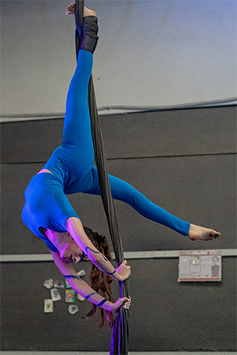

Muestra
Todos los años, cuando ya se acercan los últimos meses, nos ponemos a organizar una muestra de
alumnes.
Es un espacio para que todes les alumnes que vengan entrenando puedan demostrar todo lo que
estuvieron
aprendiendo, no solo técnicamente, sino
también artísticamente y como grupo.
Sucede en el mes de diciembre. Cada grupo, tanto de la escuelita de infancias como de adultes, se toma el mes anterior para armar un número de circo; una puesta en escena con las acrobacias que estuvieron trabajando, las coreografías que quieran agregarle y un vestuario con maquillaje a libre elección. Se invitan a todas las familias, amigues, conocides... a quien sea!
Es una gran oportunidad para un último compartir en el año con nuestrxs compañerxs de clases, previo a proyectar los objetivos del siguiente año.